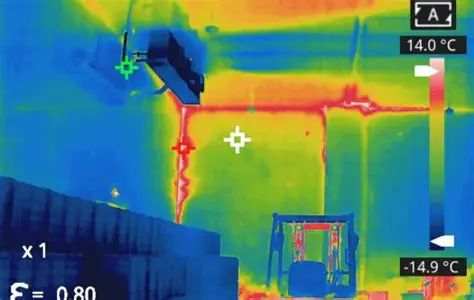

赤外線カメラで雨漏り診断｜従来調査との違いと無料調査のメリット
公開日：2026年2月25日
赤外線カメラを使った雨漏り診断の仕組みと、従来の目視調査では発見できない雨漏り原因を特定する方法を専門家が解説。無料調査実施中。

赤外線カメラで雨漏り原因を正確に特定
こんなお悩みありませんか？
- 雨漏りの原因がわからず、何度も修理している
- 目視調査では異常なしと言われたが、雨漏りが止まらない
- 壁の中や天井裏の水の侵入経路を知りたい
- 正確な診断で無駄な修理費用を避けたい
町田市や横浜青葉区でも、赤外線カメラでの雨漏り診断が注目されています。この記事では、赤外線カメラの仕組みと従来調査との違い、無料調査のメリットを詳しく解説します。
赤外線カメラとは？雨漏り診断の仕組み
赤外線カメラの基本原理
赤外線カメラ（サーモグラフィー）は、物体が発する赤外線（熱）を検知し、温度分布を画像化する装置です。
雨漏り診断での活用：
- 水分のある箇所は温度が低い → 青～緑色で表示
- 乾燥した箇所は温度が高い → 黄～赤色で表示
- 温度差で水の侵入経路を可視化 → 目視では見えない雨漏りを発見
なぜ雨漏り診断に有効なのか？
水は熱容量が大きく、周囲より温度が低くなります。この温度差を赤外線カメラで検知することで、壁の中や天井裏など、目に見えない場所の雨漏りを特定できます。
具体例：
- 壁内部の水の浸入経路
- 天井裏の漏水箇所
- 断熱材の濡れている範囲
- 外壁のクラック（ひび割れ）からの浸水
従来の目視調査との違い
| 項目 | 従来の目視調査 | 赤外線カメラ診断 |
|---|---|---|
| 調査範囲 | 目に見える範囲のみ | 壁内部・天井裏も可視化 |
| 精度 | 経験に依存、見落としあり | 科学的根拠に基づく正確な診断 |
| 調査時間 | 30分〜1時間 | 30分〜1時間（同等） |
| 破壊調査 | 必要な場合あり（壁を剥がす等） | 非破壊で調査可能 |
| 発見できる雨漏り | 表面の雨染み、剥がれなど | 初期段階の雨漏り、隠れた浸水 |
赤外線カメラ診断の圧倒的メリット
1 非破壊で調査できる
壁や天井を壊さずに、内部の状態を確認できます。余計な修理費用がかかりません。
2 初期段階の雨漏りを発見
雨染みや剥がれが出る前の、わずかな水分の侵入も検知できます。被害を最小限に抑えられます。
3 水の侵入経路を可視化
雨漏りの原因箇所から、室内への侵入経路まで一目で把握できます。的確な修理計画が立てられます。
4 無駄な修理を避けられる
原因を正確に特定できるため、見当違いの場所を修理して費用を無駄にすることがありません。
赤外線カメラで発見できる雨漏りの症状
外壁の雨漏り
- 外壁のクラック（ひび割れ）からの浸水
- シーリング（コーキング）の劣化
- サッシ周りからの浸水
屋根の雨漏り
- 瓦のズレ・破損からの浸水
- 谷樋（たにどい）の劣化
- 棟板金（むねばんきん）の浮き
ベランダ・バルコニー
- 防水層の劣化・ひび割れ
- 排水口の詰まりによる溢水
- 笠木（手すり）からの浸水
その他の水の侵入
- 配管の漏水
- 結露による水分
- 地下からの湿気の上昇
無料調査のメリット
当社では赤外線カメラ診断を無料で実施
通常、赤外線カメラでの雨漏り診断は3万円〜5万円程度の費用がかかりますが、当社では完全無料で実施しています。
無料調査を実施する理由：
- 正確な診断で適切な修理 → お客様の信頼につながる
- 無駄な修理を避ける → 結果的にコストダウン
- 早期発見で被害を最小化 → お客様の負担を軽減
無料調査の流れ
お問い合わせ（LINE・電話）
雨漏りの症状、発生時期、場所などをお聞きします。
現地調査の日程調整
ご都合の良い日時に訪問します。最短で即日対応も可能です。
赤外線カメラで診断（30分〜1時間）
屋根・外壁・室内を詳しく調査し、雨漏り原因を特定します。
診断結果のご説明
赤外線画像をお見せしながら、原因と修理方法を丁寧に説明します。
お見積もり提示
修理内容と費用を明確にご提示します。無理な営業は一切いたしません。
よくある質問
赤外線カメラ診断は本当に無料ですか？
はい、完全無料です。調査後に修理を依頼されなくても、診断費用は一切いただきません。
※ただし、町田市・横浜青葉区・麻生区・稲城市・日野市以外の遠方地域は、出張費をいただく場合がございます。
調査当日、雨が降っていても大丈夫ですか？
赤外線カメラ診断は、雨の日でも調査可能です。むしろ、雨が降った直後の方が温度差が大きく、水の侵入箇所を発見しやすくなります。
※ただし、屋根の調査は安全のため、雨が止んでから実施する場合があります。
調査にはどのくらい時間がかかりますか？
通常、30分〜1時間程度です。建物の大きさや雨漏りの状況により、前後する場合があります。
診断結果のご説明とお見積もり提示を含めると、全体で1時間〜1時間半ほどお時間をいただきます。
赤外線カメラで100%雨漏り原因を特定できますか？
赤外線カメラは非常に精度の高い診断方法ですが、状況により特定できない場合もあります。
特定しにくいケース：
- 雨漏りが長期間止まっており、完全に乾燥している
- 水の侵入量が極めて少ない
- 複数箇所から同時に浸水している
その場合は、散水調査など他の方法と組み合わせて原因を特定します。
調査だけお願いして、修理は別の業者に依頼してもいいですか？
もちろん可能です。診断結果は丁寧にご説明し、赤外線画像もお渡しします。
当社は無理な営業は一切いたしません。診断結果をもとに、ご納得いただいた上で修理をご検討ください。
まとめ：赤外線カメラで正確な雨漏り診断を
赤外線カメラ診断：温度差を可視化し、目に見えない雨漏りを発見
従来調査との違い：非破壊で壁内部・天井裏まで調査可能
発見できる症状：外壁・屋根・ベランダの雨漏り、初期段階の浸水も検知
無料調査：赤外線カメラ診断を完全無料で実施（町田・青葉区・麻生区対応）
調査時間：30分〜1時間で診断完了、即日対応も可能
雨漏りの原因を正確に特定し、無駄な修理費用を避けるために、赤外線カメラでの診断をおすすめします。無料調査実施中です。